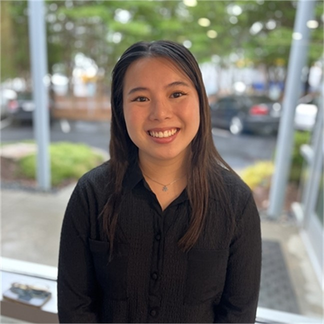

About Us
Team Members
John Huynh Khang Nguyen Trisha Nguyen

| Front-End Developer | Back-End Developer | Team Lead/ Documentation |
|---|---|---|
| CS 4850 Section: 02 | CS 4850 Section: 03 | CS 4850 Section: 03 |
| jhuynh15 | knguy101 | tnguy333 |
Introducing Mentor Match
Overview
We aim to streamline the connection process between mentor and mentee for the KSU CCSE Mentorship program. To do this, we will develop a website where mentors and mentees can create a profile and upload their resume / credentials, enter in relevant information, and their preferences for a mentor/mentee. With this information, we then recommend different mentors to mentees where they can swipe left or right like a dating app. After they have swiped right (expressed interest) in a mentor, the mentor then receives a notification of an expressed interest from a mentee. The mentor can then review the mentee’s information and decide if they want to select the applicant as a mentee. After the selection, the mentor and mentee are given each other’s contact information, and the mentoring relationship can begin seamlessly. With a website, it makes the matching process more accessible and cuts down on the amount of manual communication needed to ensure connections are made.Link to Mentor Match Below:
[Insert Link to Mentor Match Here:]